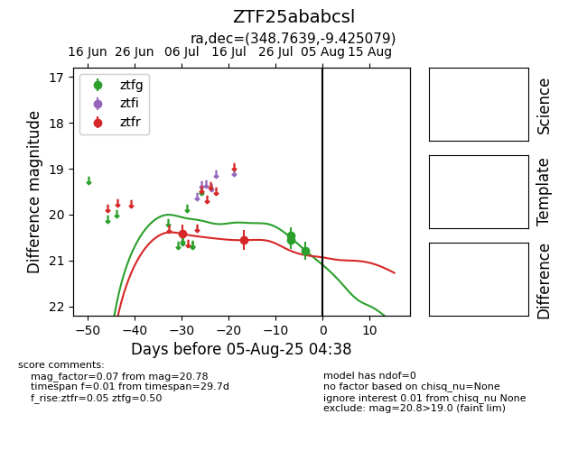

Target ZTF25ababcsl at 2025-08-05 04:38, see:
FINK: fink-portal.org/ZTF25ababcsl
Lasair: lasair-ztf.lsst.ac.uk/objects/ZTF25ababcsl
ALeRCE: alerce.online/object/ZTF25ababcsl
alt names
ZTF25ababcsl (ztf,fink)
coordinates:
equatorial (ra, dec) = (348.7639,-9.42508)
galactic (l, b) = (66.2651,-61.18056)
photometry
last ztfg=20.78, ztfr=20.55
3 ztfg, 2 ztfr detections
